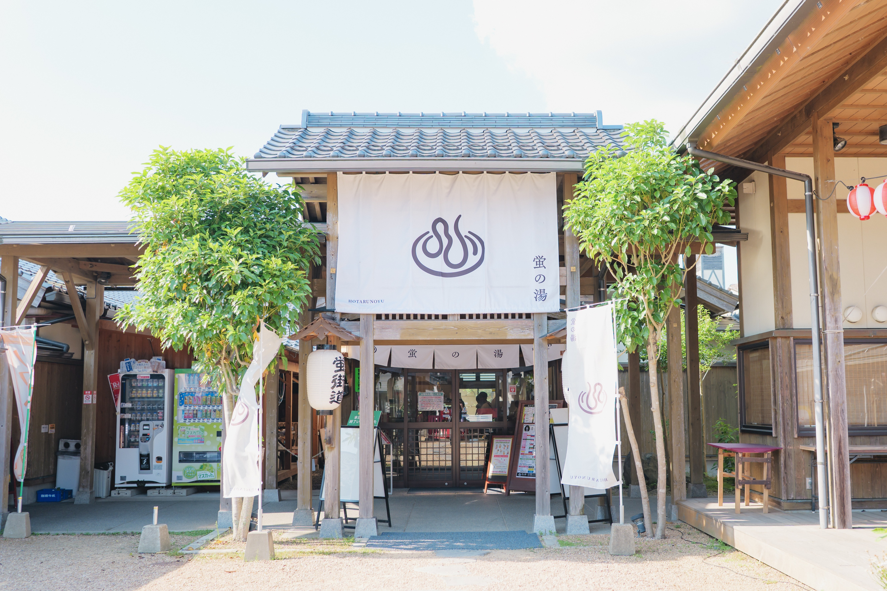

forest 豊田町エリア
県立自然公園の美しい山々と、澄んだ川のせせらぎに包まれる町
spa NATURE & RELAX
初夏の風物詩「ホタル」と、とろとろの美肌湯
西日本有数のホタルの里として知られ、初夏には幻想的な光の舞や「ホタル舟」を楽しむことができます。また、とろとろとした泉質が自慢の豊田温泉もあり、豊かな自然の中で心身ともにリフレッシュできる癒やしのスポットです。

agriculture AGRICULTURE
もぎたてを味わう、旬のフルーツ栽培が盛んな町
「豊田梨」をはじめ、ぶどうやりんごなど、四季折々のフルーツ栽培が盛んな農業地域です。シーズンには多くの観光客が果物狩りに訪れ、新鮮な味わいを家族や友人と一緒に楽しむことができます。
image
camping OUTDOOR
湖畔の美しい風景と、充実したアウトドア体験
美しい湖や山々に囲まれ、キャンプやワカサギ釣りなどのアウトドア・レジャーが充実しています。澄んだ空気と静かな環境の中で、ゆったりとした時間を過ごすスローライフを満喫できるエリアです。
image